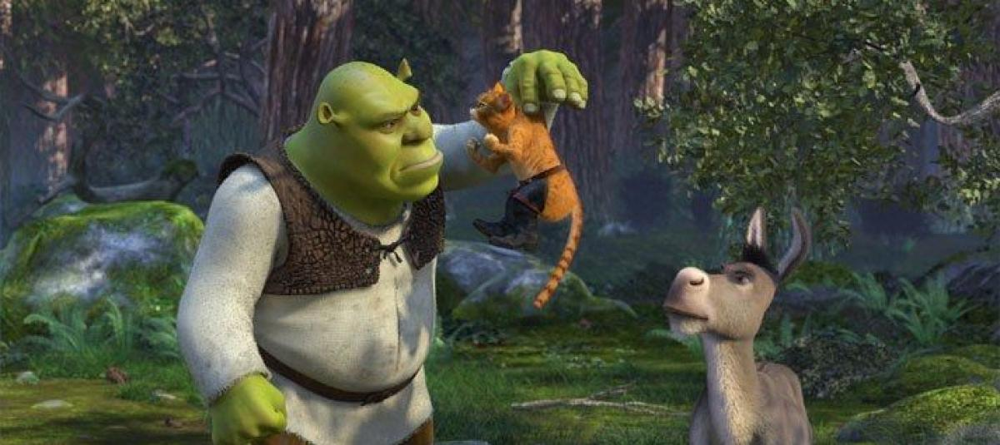
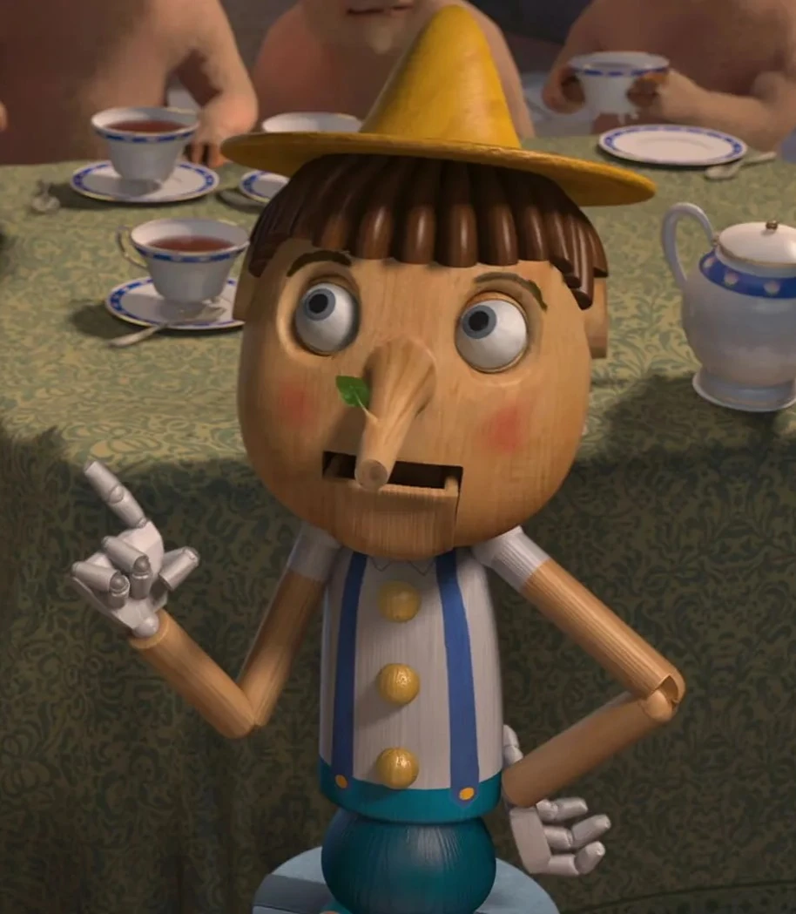
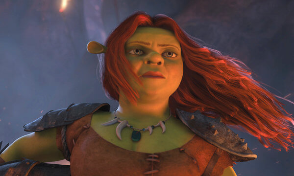
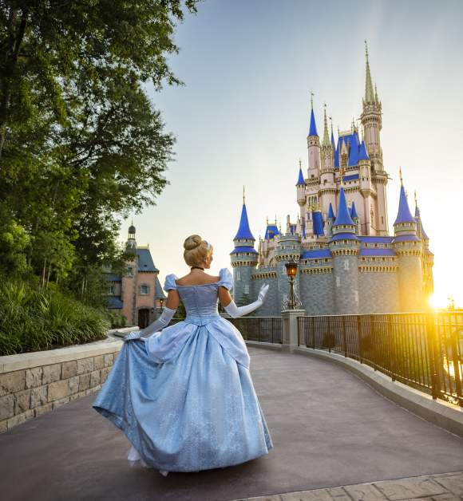

Post-apocalipsis
Algunos creen que el mundo de Shrek es una versión futura donde la civilización moderna desapareció.

Burro y Pinocho
Esta teoría dice que Burro fue un niño transformado en animal, como en la historia de Pinocho.

Fiona ogra
Más que una maldición, su forma de ogra sería su verdadera identidad aceptada al final.

Sátira
Shrek es una crítica a los cuentos de hadas tradicionales, especialmente a la perfección mostrada por Disney.